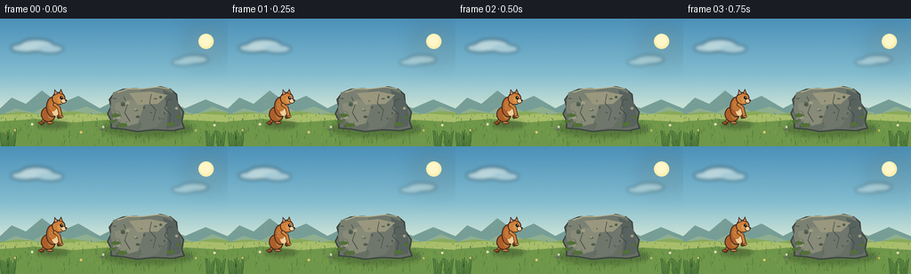
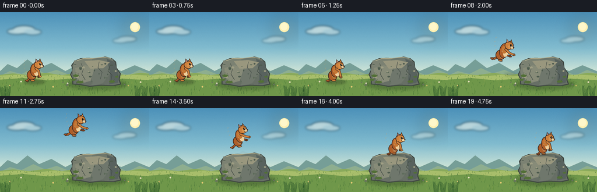
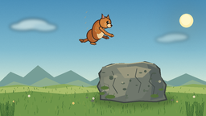
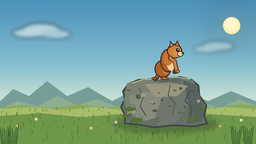
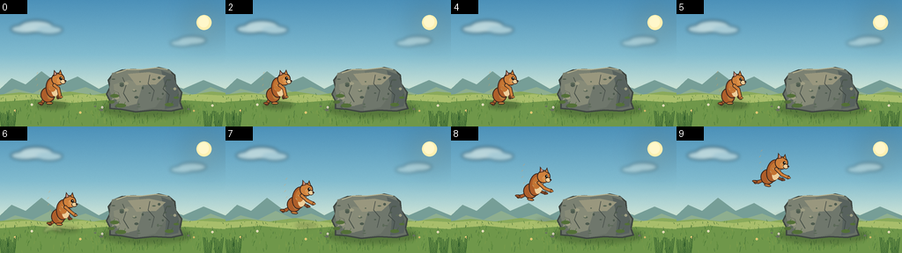

CODING AGENTS AS PIXEL WORLD MODELS
traex/DeepSeek-V4.1-Flash · dynamic_spatial_relationship_0025
点击播放 · 原生 RGB 像素
逐轮保存的候选
回放视频、检查图与代码变化。
每份候选均可单独播放。实际图片检查记录在下方工具轨迹中。
候选 01播放与检查图
点击播放 · 原生 RGB 像素


展开代码变化
--- 上一保存版本
+++ 本次保存版本
@@ -0,0 +1,502 @@
+from __future__ import annotations
+
+import math
+import random
+from pathlib import Path
+
+import numpy as np
+from PIL import Image, ImageDraw, ImageFilter
+
+import artifact_io
+
+
+W, H, FPS, N = 256, 144, 4.0, 20
+S = 4
+CASE_DIR = Path(__file__).resolve().parent
+
+
+def sc(x: float, y: float) -> tuple[int, int]:
+ return round(x * S), round(y * S)
+
+
+def lerp(a: float, b: float, t: float) -> float:
+ return a + (b - a) * t
+
+
+def mix(a: tuple[int, int, int], b: tuple[int, int, int], t: float) -> tuple[int, int, int]:
+ return tuple(round(lerp(a[i], b[i], t)) for i in range(3))
+
+
+def bezier(p0, p1, p2, p3, steps=24):
+ result = []
+ for i in range(steps + 1):
+ t = i / steps
+ u = 1.0 - t
+ x = u**3 * p0[0] + 3 * u * u * t * p1[0] + 3 * u * t * t * p2[0] + t**3 * p3[0]
+ y = u**3 * p0[1] + 3 * u * u * t * p1[1] + 3 * u * t * t * p2[1] + t**3 * p3[1]
+ result.append((x, y))
+ return result
+
+
+def thick_curve(draw: ImageDraw.ImageDraw, points, width: float, fill):
+ pts = [sc(x, y) for x, y in points]
+ px_width = max(1, round(width * S))
+ draw.line(pts, fill=fill, width=px_width, joint="curve")
+ radius = px_width / 2
+ for x, y in pts:
+ draw.ellipse((x - radius, y - radius, x + radius, y + radius), fill=fill)
+
+
+def build_background() -> Image.Image:
+ hh, ww = H * S, W * S
+ rows = np.arange(hh, dtype=np.float32) / (hh - 1)
+ stops = [
+ (0.00, (76, 145, 185)),
+ (0.43, (130, 188, 207)),
+ (0.68, (198, 224, 214)),
+ (0.76, (211, 225, 190)),
+ (1.00, (100, 139, 77)),
+ ]
+ arr = np.empty((hh, ww, 3), dtype=np.uint8)
+ for y in range(hh):
+ t = rows[y]
+ for (ta, ca), (tb, cb) in zip(stops[:-1], stops[1:]):
+ if t <= tb:
+ f = (t - ta) / max(tb - ta, 1e-6)
+ arr[y, :, :] = mix(ca, cb, f)
+ break
+
+ # A restrained film-like grain keeps the flat sky from banding.
+ rng = np.random.default_rng(12)
+ grain = rng.normal(0, 1.8, (hh, ww, 1))
+ arr = np.clip(arr.astype(np.float32) + grain, 0, 255).astype(np.uint8)
+ image = Image.fromarray(arr, "RGB").convert("RGBA")
+
+ glow = Image.new("RGBA", image.size, (0, 0, 0, 0))
+ gd = ImageDraw.Draw(glow)
+ gd.ellipse((*sc(214, 11), *sc(248, 45)), fill=(255, 231, 159, 70))
+ glow = glow.filter(ImageFilter.GaussianBlur(14 * S))
+ image = Image.alpha_composite(image, glow)
+
+ d = ImageDraw.Draw(image)
+ d.ellipse((*sc(223, 17), *sc(240, 34)), fill=(255, 239, 177, 235))
+ d.ellipse((*sc(225, 18), *sc(237, 31)), fill=(255, 247, 202, 250))
+
+ # Distant layered hills.
+ d.polygon(
+ [sc(-4, 105), sc(13, 89), sc(29, 96), sc(47, 81), sc(67, 96), sc(88, 87),
+ sc(112, 101), sc(132, 91), sc(153, 102), sc(181, 91), sc(208, 101),
+ sc(231, 91), sc(260, 103), sc(260, 130), sc(-4, 130)],
+ fill=(118, 158, 151, 255),
+ )
+ d.polygon(
+ [sc(-4, 111), sc(17, 101), sc(37, 106), sc(57, 96), sc(77, 105), sc(97, 99),
+ sc(120, 108), sc(145, 98), sc(169, 108), sc(194, 100), sc(220, 108),
+ sc(239, 99), sc(260, 107), sc(260, 130), sc(-4, 130)],
+ fill=(142, 174, 143, 255),
+ )
+
+ # Meadow, with a pale sunlit band at the horizon.
+ d.polygon(
+ [sc(-4, 108), sc(22, 105), sc(50, 108), sc(79, 104), sc(106, 108),
+ sc(132, 104), sc(159, 107), sc(187, 104), sc(216, 108), sc(240, 104),
+ sc(260, 106), sc(260, 146), sc(-4, 146)],
+ fill=(138, 170, 91, 255),
+ )
+ d.polygon(
+ [sc(-4, 109), sc(33, 107), sc(65, 110), sc(93, 107), sc(127, 110),
+ sc(158, 107), sc(191, 110), sc(222, 107), sc(260, 109), sc(260, 118),
+ sc(-4, 118)],
+ fill=(168, 190, 107, 255),
+ )
+ d.polygon(
+ [sc(-4, 116), sc(40, 113), sc(82, 117), sc(120, 114), sc(164, 117),
+ sc(210, 114), sc(260, 117), sc(260, 146), sc(-4, 146)],
+ fill=(111, 151, 74, 255),
+ )
+
+ # Soft cloud forms, kept away from the squirrel's jump silhouette.
+ cloud = Image.new("RGBA", image.size, (0, 0, 0, 0))
+ cd = ImageDraw.Draw(cloud)
+ for cx, cy, rx, ry, alpha in [
+ (28, 33, 16, 5, 125),
+ (41, 30, 19, 7, 145),
+ (56, 34, 15, 5, 110),
+ (206, 49, 13, 4, 80),
+ (218, 46, 16, 5, 92),
+ ]:
+ cd.ellipse((*sc(cx - rx, cy - ry), *sc(cx + rx, cy + ry)), fill=(247, 249, 237, alpha))
+ cloud = cloud.filter(ImageFilter.GaussianBlur(2.0 * S))
+ image = Image.alpha_composite(image, cloud)
+ d = ImageDraw.Draw(image)
+
+ # Meadow grass and tiny flowers establish scale without competing with the actors.
+ rng = random.Random(31)
+ for _ in range(330):
+ x = rng.uniform(0, W)
+ y = rng.uniform(108, 144)
+ depth = (y - 108) / 36
+ length = rng.uniform(1.3, 4.2) * (0.6 + depth)
+ lean = rng.uniform(-1.2, 1.2)
+ color = rng.choice([(75, 121, 54), (90, 136, 57), (128, 158, 75), (65, 108, 55)])
+ d.line(
+ [sc(x, y), sc(x + lean, y - length)],
+ fill=color + (rng.randint(135, 215),),
+ width=max(1, round(S * 0.42)),
+ )
+ for x, y, color in [
+ (17, 126, (244, 218, 130)), (36, 119, (246, 238, 207)),
+ (91, 128, (245, 213, 122)), (116, 122, (243, 238, 216)),
+ (220, 126, (239, 204, 119)), (241, 120, (247, 235, 202)),
+ ]:
+ r = rng.uniform(0.8, 1.3)
+ d.ellipse((*sc(x - r, y - r), *sc(x + r, y + r)), fill=color + (230,))
+ d.ellipse((*sc(x - 0.35, y - 0.35), *sc(x + 0.35, y + 0.35)), fill=(113, 83, 38, 255))
+
+ # Small foreground tufts anchor the lower corners.
+ for base_x in (5, 13, 236, 248):
+ for k in range(6):
+ x = base_x + (k - 2.5) * 1.3
+ top = 133 - abs(k - 2.5) * 2.0 - rng.uniform(0, 4)
+ d.line([sc(x, 145), sc(x + (k - 2.5) * 0.8, top)],
+ fill=(48, 91, 43, 230), width=round(0.7 * S))
+
+ return image
+
+
+def draw_rock(base: Image.Image) -> None:
+ d = ImageDraw.Draw(base, "RGBA")
+
+ shadow = Image.new("RGBA", base.size, (0, 0, 0, 0))
+ sd = ImageDraw.Draw(shadow)
+ sd.ellipse((*sc(116, 116), *sc(216, 132)), fill=(46, 69, 38, 100))
+ shadow = shadow.filter(ImageFilter.GaussianBlur(3.0 * S))
+ base.alpha_composite(shadow)
+
+ points = [
+ (124, 124), (124, 115), (120, 107), (124, 99), (122, 91),
+ (128, 83), (138, 79), (151, 78), (165, 79), (180, 76),
+ (192, 79), (199, 85), (200, 95), (207, 105), (205, 116),
+ (208, 124), (194, 127), (174, 126), (154, 128), (137, 125),
+ ]
+ poly = [sc(x, y) for x, y in points]
+ d.polygon(poly, fill=(103, 111, 101, 255), outline=(62, 70, 65, 255), width=round(1.8 * S))
+
+ # Broad planes give the boulder volume.
+ d.polygon(
+ [sc(127, 83), sc(140, 80), sc(158, 79), sc(157, 105), sc(146, 121), sc(128, 114), sc(124, 101)],
+ fill=(123, 129, 114, 255),
+ )
+ d.polygon(
+ [sc(158, 79), sc(181, 77), sc(193, 80), sc(198, 91), sc(188, 106), sc(176, 122), sc(157, 126)],
+ fill=(111, 119, 108, 255),
+ )
+ d.polygon(
+ [sc(183, 80), sc(196, 85), sc(201, 98), sc(204, 111), sc(202, 121), sc(187, 124), sc(189, 105)],
+ fill=(88, 98, 94, 255),
+ )
+ d.polygon(
+ [sc(129, 96), sc(146, 91), sc(162, 96), sc(155, 118), sc(139, 122), sc(130, 111)],
+ fill=(135, 139, 120, 255),
+ )
+ d.polygon(
+ [sc(145, 84), sc(169, 82), sc(188, 86), sc(177, 96), sc(155, 97)],
+ fill=(153, 151, 126, 255),
+ )
+
+ # Highlight the upper shelf where the squirrel will land.
+ d.line(
+ [sc(132, 83), sc(144, 79), sc(160, 79), sc(177, 77), sc(190, 79)],
+ fill=(181, 177, 144, 235), width=round(1.25 * S), joint="curve",
+ )
+
+ # Fractures and mottling.
+ for pts, width, color in [
+ ([(139, 88), (143, 97), (140, 106), (146, 116)], 0.8, (68, 77, 70, 210)),
+ ([(170, 85), (168, 95), (175, 103), (172, 115)], 0.7, (70, 78, 72, 200)),
+ ([(189, 91), (185, 101), (192, 108), (190, 118)], 0.7, (65, 73, 68, 205)),
+ ([(129, 103), (134, 105), (136, 111)], 0.6, (82, 88, 79, 190)),
+ ]:
+ d.line([sc(x, y) for x, y in pts], fill=color, width=round(width * S), joint="curve")
+
+ rng = random.Random(9)
+ for _ in range(26):
+ x = rng.uniform(128, 201)
+ y = rng.uniform(87, 122)
+ rx = rng.uniform(0.8, 3.2)
+ ry = rng.uniform(0.5, 1.7)
+ color = rng.choice([(78, 91, 79, 100), (159, 158, 132, 110), (91, 105, 88, 110)])
+ d.ellipse((*sc(x - rx, y - ry), *sc(x + rx, y + ry)), fill=color)
+
+ # Moss clings to the left and lower shelf.
+ for x, y, rx, ry in [
+ (130, 109, 5, 2), (137, 120, 6, 2.2), (126, 116, 4, 1.8),
+ (192, 119, 5, 2), (200, 111, 3, 1.3),
+ ]:
+ d.ellipse((*sc(x - rx, y - ry), *sc(x + rx, y + ry)), fill=(83, 112, 55, 190))
+ for x, y in [(129, 108), (134, 118), (141, 119), (195, 118), (201, 110)]:
+ d.line([sc(x, y), sc(x + 1.2, y - 3)], fill=(64, 100, 46, 210), width=round(0.45 * S))
+
+ # A few stones and stems at the base tie the rock into the meadow.
+ for x, y, r in [(115, 125, 2.2), (214, 124, 1.7), (108, 121, 1.2)]:
+ d.ellipse((*sc(x - r, y - r * 0.55), *sc(x + r, y + r * 0.55)), fill=(103, 113, 93, 220))
+ for x in (119, 211, 216):
+ d.line([sc(x, 128), sc(x - 1, 121)], fill=(66, 107, 52, 220), width=round(0.55 * S))
+ d.line([sc(x, 128), sc(x + 1.5, 122)], fill=(79, 120, 56, 210), width=round(0.45 * S))
+
+
+def draw_squirrel(pose: dict, angle: float) -> Image.Image:
+ size = 120 * S
+ sprite = Image.new("RGBA", (size, size), (0, 0, 0, 0))
+ d = ImageDraw.Draw(sprite, "RGBA")
+ origin = (60.0, 102.0)
+
+ def lp(x, y):
+ return sc(origin[0] + x, origin[1] + y)
+
+ def ell(cx, cy, rx, ry, fill, outline=None, width=0.0):
+ box = (*lp(cx - rx, cy - ry), *lp(cx + rx, cy + ry))
+ d.ellipse(box, fill=fill, outline=outline, width=round(width * S))
+
+ def line(points, width, fill):
+ pts = [lp(x, y) for x, y in points]
+ d.line(pts, fill=fill, width=max(1, round(width * S)), joint="curve")
+ for x, y in pts:
+ r = width * S / 2
+ d.ellipse((x - r, y - r, x + r, y + r), fill=fill)
+
+ air = pose["air"]
+ crouch = pose["crouch"]
+ stretch = pose["stretch"]
+ phase = pose["phase"]
+ lean = pose["lean"]
+ tail_wave = math.sin(phase)
+
+ outline = (58, 38, 29, 255)
+ tail_dark = (112, 57, 31, 255)
+ tail_mid = (164, 86, 40, 255)
+ tail_light = (211, 131, 58, 255)
+ fur_mid = (173, 94, 42, 255)
+ fur_light = (207, 129, 60, 255)
+ belly = (239, 207, 155, 255)
+
+ # Bushy tail, drawn first and animated as a single elastic curve.
+ tail1 = bezier(
+ (-4.0, -8.0 + crouch * 1.5),
+ (-15.0 - 1.5 * tail_wave, -10.0 - 3.0 * air),
+ (-22.0 + 1.2 * tail_wave, -28.0 - 4.0 * air),
+ (-13.0 + 2.0 * tail_wave, -42.0 + 1.5 * math.cos(phase)),
+ steps=30,
+ )
+ tail2 = bezier(
+ (-13.0 + 2.0 * tail_wave, -42.0 + 1.5 * math.cos(phase)),
+ (-7.0, -49.0 + 1.5 * tail_wave),
+ (0.5, -43.0),
+ (2.0 - 0.8 * tail_wave, -35.5),
+ steps=22,
+ )
+ thick_curve(d, tail1, 11.2, outline)
+ thick_curve(d, tail2, 10.1, outline)
+ thick_curve(d, tail1, 8.5, tail_dark)
+ thick_curve(d, tail2, 7.4, tail_mid)
+ thick_curve(d, tail1[4:-5], 4.4, tail_mid)
+ thick_curve(d, tail2[2:-4], 3.8, tail_light)
+ for idx in range(5, len(tail1) - 4, 5):
+ x, y = tail1[idx]
+ d.line([lp(x - 0.4, y), lp(x + 1.0, y - 2.1)], fill=(231, 158, 82, 120), width=round(0.5 * S))
+
+ # Hind legs and paws.
+ hind_knee = (-8.0 - 5.0 * air, -5.0 + 3.0 * air)
+ hind_foot = (-11.0 - 5.0 * air, 0.0 - 1.2 * air)
+ if crouch > 0:
+ hind_knee = (hind_knee[0] + 2 * crouch, hind_knee[1] + 1.5 * crouch)
+ line([(-4, -9), hind_knee, hind_foot], 4.1, outline)
+ line([(-4, -9), hind_knee, hind_foot], 2.7, fur_mid)
+ ell(-12.0 - 5.0 * air, -0.6 - 1.2 * air, 3.1, 1.4, fur_mid, outline, 0.8)
+
+ # Far foreleg stays slightly darker for depth.
+ far_paw = (8.0 + 5.0 * air, -7.0 - 4.0 * air)
+ line([(2, -18), (7, -12), far_paw], 3.6, outline)
+ line([(2, -18), (7, -12), far_paw], 2.3, (130, 72, 38, 255))
+ ell(far_paw[0] + 1.2, far_paw[1] + 0.1, 2.0, 1.25, (130, 72, 38, 255), outline, 0.6)
+
+ # Haunch and torso.
+ ell(-3.7, -10.2 + crouch * 1.8, 8.2 - crouch * 0.6, 8.8 + crouch * 0.3, fur_mid, outline, 1.1)
+ ell(-1.0, -10.0 + crouch * 1.5, 3.5, 5.3, (189, 111, 49, 210))
+ body_y = -18.5 + crouch * 2.3
+ body_rx = 7.2 + 0.8 * stretch
+ body_ry = 11.4 + 1.6 * stretch - 1.8 * crouch
+ ell(1.0 + lean * 0.2, body_y, body_rx, body_ry, fur_mid, outline, 1.1)
+ ell(4.3 + lean * 0.2, body_y + 1.6, 4.4, 8.3 - 1.0 * crouch, belly)
+ ell(1.4, body_y - 2.2, 4.8, 7.0, (196, 117, 51, 255))
+
+ # Head, ears, cheek, and face.
+ head_x = 7.8 + lean
+ head_y = -28.0 + crouch * 2.4 - 1.1 * air
+ ell(head_x, head_y, 7.5, 7.3, fur_light, outline, 1.1)
+ ell(head_x + 3.0, head_y + 2.0, 4.1, 3.7, (220, 145, 73, 255))
+ ell(head_x + 5.6, head_y + 2.7, 3.1, 2.8, belly, outline, 0.7)
+
+ # Ears rotate back slightly while airborne.
+ ear_tip_back = -1.7 * air
+ left_ear = [
+ (head_x - 5.3, head_y - 3.3),
+ (head_x - 4.5 + ear_tip_back, head_y - 10.5),
+ (head_x - 0.5, head_y - 5.6),
+ ]
+ right_ear = [
+ (head_x + 0.1, head_y - 5.8),
+ (head_x + 2.6 + ear_tip_back * 0.6, head_y - 11.0),
+ (head_x + 5.1, head_y - 4.2),
+ ]
+ d.polygon([lp(x, y) for x, y in left_ear], fill=fur_mid, outline=outline, width=round(0.8 * S))
+ d.polygon([lp(x, y) for x, y in right_ear], fill=fur_light, outline=outline, width=round(0.8 * S))
+ d.polygon(
+ [lp(head_x - 4.1, head_y - 4.8), lp(head_x - 4.2, head_y - 8.6), lp(head_x - 1.7, head_y - 5.8)],
+ fill=(210, 126, 110, 190),
+ )
+
+ # Eye with catchlight, nose, and a tiny alert mouth.
+ eye_x, eye_y = head_x + 3.0, head_y - 1.0
+ ell(eye_x, eye_y, 1.55, 1.75, (26, 23, 18, 255))
+ ell(eye_x + 0.45, eye_y - 0.45, 0.42, 0.45, (255, 249, 218, 255))
+ ell(head_x + 8.3, head_y + 2.1, 1.05, 0.75, (55, 34, 27, 255))
+ d.arc((*lp(head_x + 5.7, head_y + 2.9), *lp(head_x + 8.0, head_y + 5.1)),
+ start=8, end=82, fill=(91, 50, 34, 230), width=round(0.55 * S))
+
+ # Near foreleg reaches forward in flight and folds while standing.
+ if air > 0.15:
+ elbow = (8.0 + 3.2 * air, -17.0 + 0.8 * air)
+ paw = (13.8 + 5.0 * air, -11.8 - 3.0 * air)
+ else:
+ elbow = (8.1, -17.5 + crouch * 1.4)
+ paw = (10.2, -7.8 + crouch * 2.2)
+ line([(3.8, -21.0 + crouch), elbow, paw], 4.1, outline)
+ line([(3.8, -21.0 + crouch), elbow, paw], 2.8, fur_light)
+ ell(paw[0] + 1.0, paw[1], 2.0, 1.2, fur_light, outline, 0.6)
+
+ # Near foot is visible against the contact point.
+ ell(-2.0, -0.7, 4.0, 1.55, fur_light, outline, 0.75)
+ for fx in (-4.5, -3.1, -1.7, -0.2):
+ d.line([lp(fx, 0.0), lp(fx + 0.2, 1.0)], fill=(69, 43, 29, 180), width=round(0.42 * S))
+
+ # Sparse fur accents follow the body without changing between frames.
+ for x, y, dx, dy in [
+ (-1, -16, -2, -1), (1, -20, -2, -1), (3, -13, -2, -0.5),
+ (7, -27, 1, -2), (10, -25, 1, -1.5),
+ ]:
+ d.line([lp(x, y), lp(x + dx, y + dy)], fill=(242, 181, 94, 120), width=round(0.45 * S))
+
+ return sprite.rotate(
+ angle,
+ resample=Image.Resampling.BICUBIC,
+ center=sc(origin[0], origin[1]),
+ expand=False,
+ )
+
+
+def positions() -> list[dict]:
+ table = [
+ (58.0, 118.0, 0.0, 0.00, 0.00, 0.0, 0.2),
+ (58.3, 118.0, 0.0, 0.00, 0.00, 0.0, 0.7),
+ (58.0, 118.0, 0.0, 0.00, 0.00, 0.0, 1.2),
+ (58.4, 118.0, 0.0, 0.00, 0.00, 0.0, 1.7),
+ (59.0, 118.0, 0.0, 0.00, 0.00, 0.0, 2.2),
+ (62.5, 118.0, 1.5, 0.12, 0.65, 0.4, 2.6),
+ (69.0, 112.0, -4.5, 0.25, 0.45, 0.7, 3.0),
+ (80.0, 99.0, -8.0, 0.75, 0.10, 0.9, 3.4),
+ (92.0, 84.0, -11.0, 1.00, 0.00, 1.0, 3.8),
+ (105.0, 68.0, -13.0, 1.00, 0.00, 1.0, 4.2),
+ (117.5, 55.0, -11.0, 1.00, 0.00, 0.9, 4.6),
+ (129.0, 48.0, -4.0, 1.00, 0.00, 0.8, 5.0),
+ (139.0, 49.0, 3.0, 0.95, 0.00, 0.5, 5.4),
+ (149.0, 56.0, 8.0, 0.85, 0.00, 0.2, 5.8),
+ (157.0, 66.0, 10.0, 0.65, 0.05, 0.0, 6.2),
+ (163.0, 77.0, 6.0, 0.20, 0.70, 0.0, 6.6),
+ (166.0, 79.0, 0.0, 0.00, 0.42, 0.0, 7.0),
+ (166.4, 79.0, 0.0, 0.00, 0.00, 0.0, 7.5),
+ (166.1, 79.0, 0.0, 0.00, 0.00, 0.0, 8.0),
+ (166.4, 79.0, 0.0, 0.00, 0.00, 0.0, 8.5),
+ ]
+ result = []
+ for x, y, angle, air, crouch, stretch, phase in table:
+ result.append({
+ "x": x, "y": y, "angle": angle, "air": air,
+ "crouch": crouch, "stretch": stretch, "phase": phase,
+ "lean": 0.35 * math.sin(phase) * (1.0 - air),
+ })
+ return result
+
+
+def add_shadow(frame: Image.Image, state: dict, index: int) -> None:
+ overlay = Image.new("RGBA", frame.size, (0, 0, 0, 0))
+ d = ImageDraw.Draw(overlay)
+ height = max(0.0, 118.0 - state["y"])
+ if index <= 5:
+ cx, cy = state["x"] + 1, 119.5
+ rx, ry, alpha = 18.0, 4.0, 92
+ elif index >= 15:
+ cx, cy = state["x"] + 1, 80.3
+ rx, ry, alpha = 14.0, 2.5, 65
+ else:
+ cx = lerp(state["x"] + 2, 132, min(0.55, height / 100))
+ cy = lerp(119.5, 91.0, min(1.0, height / 75))
+ shrink = max(0.45, 1.0 - height / 95)
+ rx, ry = 16.0 * shrink, 3.8 * shrink
+ alpha = round(68 * shrink)
+ d.ellipse((*sc(cx - rx, cy - ry), *sc(cx + rx, cy + ry)), fill=(42, 54, 33, alpha))
+ overlay = overlay.filter(ImageFilter.GaussianBlur(2.1 * S))
+ frame.alpha_composite(overlay)
+
+
+def add_dust(frame: Image.Image, index: int) -> None:
+ if index not in (5, 6, 14, 15, 16):
+ return
+ overlay = Image.new("RGBA", frame.size, (0, 0, 0, 0))
+ d = ImageDraw.Draw(overlay)
+ if index in (5, 6):
+ cx, cy, strength = 61, 118, 1.0 if index == 6 else 0.55
+ spread = 1.0 if index == 6 else 0.6
+ else:
+ cx, cy, strength = 163, 79, 0.75 if index == 15 else 0.5
+ spread = 1.0 if index == 15 else 0.65
+ for ox, oy, r in [
+ (-8, -1, 2.6), (-4, -3, 3.4), (1, -2, 2.8), (6, -1, 2.2),
+ (-10, 1, 1.8), (8, 1, 1.6),
+ ]:
+ rr = r * spread
+ alpha = round(70 * strength)
+ d.ellipse((*sc(cx + ox * spread - rr, cy + oy * spread - rr),
+ *sc(cx + ox * spread + rr, cy + oy * spread + rr)),
+ fill=(222, 207, 160, alpha))
+ overlay = overlay.filter(ImageFilter.GaussianBlur(1.2 * S))
+ frame.alpha_composite(overlay)
+
+
+def render() -> np.ndarray:
+ base = build_background()
+ draw_rock(base)
+ states = positions()
+ frames = []
+ origin = (60.0, 102.0)
+ for index, state in enumerate(states):
+ frame = base.copy()
+ add_shadow(frame, state, index)
+ add_dust(frame, index)
+ sprite = draw_squirrel(state, state["angle"])
+ left = round((state["x"] - origin[0]) * S)
+ top = round((state["y"] - origin[1]) * S)
+ frame.alpha_composite(sprite, (left, top))
+ frame = frame.convert("RGB").resize((W, H), Image.Resampling.LANCZOS)
+ frames.append(np.asarray(frame, dtype=np.uint8))
+ return np.stack(frames)
+
+
+def main() -> None:
+ frames = render()
+ artifact_io.save(frames, CASE_DIR)
+ print(f"saved {frames.shape} RGB frames to {CASE_DIR}")
+
+
+if __name__ == "__main__":
+ main()
可观测工具轨迹
实际执行的命令与返回图片。
命令 1exit 0
/bin/bash -c "pwd && rg --files -g '"'!*__pycache__*'"' | sed -n '1,160p'"
命令 2exit 0
/bin/bash -c 'cat prompt.txt'
命令 3exit 0
/bin/bash -c 'cat GENERATION_RULES.md'
命令 4exit 0
/bin/bash -c 'cat task_spec.json'
命令 5exit 0
/bin/bash -c "sed -n '1,260p' artifact_io.py"
命令 6exit 0
/bin/bash -c "sed -n '1,260p' player_template.html"
命令 7exit 0
/bin/bash -c "python - <<'PY' import importlib.util for m in ['PIL','numpy','imageio','cv2','matplotlib']: print(m, bool(importlib.util.find_spec(m))) PY"
命令 8exit 0
/bin/bash -c 'python generate.py'
命令 9exit 0
/bin/bash -c 'which magick || which convert || true'
命令 10exit 0
/bin/bash -c "python - <<'PY'
from PIL import Image, ImageDraw
from pathlib import Path
out=Image.new('RGB',(256*4,144*2),(20,20,20))
d=ImageDraw.Draw(out)
for j,i in enumerate([0,2,4,5,6,7,8,9,10,11,12,13,14,15,16,19]):
x=(j%4)*256; y=(j//4)*144
out.paste(Image.open(f'frames/{i:02d}.png'),(x,y))
d.rectangle((x,y,x+30,y+15),fill=(0,0,0));d.text((x+3,y+2),str(i),fill='white')
out.save('.tmp/contact_sheet.png')
PY"命令 11exit 1
/bin/bash -c "python - <<'PY'
import json, numpy as np
from pathlib import Path
p=Path('.')
with np.load(p/'pixels.npz') as z:
a=z['pixels']
print('packed shape', a.shape, 'dtype', a.dtype)
spec=json.loads((p/'task_spec.json').read_text())
frames=np.stack([np.array(__import__('PIL').Image.open(p/'frames'/f'{i:02d}.png')) for i in range(spec['frames'])])
print('rgb shape', frames.shape, 'dtype', frames.dtype)
d=np.abs(frames[1:].astype(np.int16)-frames[:-1].astype(np.int16)).mean(axis=(1,2,3))
print('adjacent mean abs deltas', np.round(d,2).tolist())
print('all finite/in-range:', bool(frames.min()>=0 and frames.max()<=255), 'unique colors frame0', len(np.unique(frames[0].reshape(-1,3),axis=0)))
PY"命令 12exit 0
/bin/bash -c "ls -lh generate.py pixels.npz index.html inspection.png transition_check.png frames | sed -n '1,80p'"
命令 13exit 0
/bin/bash -c "python - <<'PY'
import json, numpy as np
from pathlib import Path
from PIL import Image
p=Path('.')
with np.load(p/'pixels.npz') as z:
a=z['pixels']
print('packed shape', a.shape, 'dtype', a.dtype)
spec=json.loads((p/'task_spec.json').read_text())
frames=np.stack([np.array(Image.open(p/'frames'/f'{i:02d}.png').convert('RGB')) for i in range(spec['frames'])])
print('rgb shape', frames.shape, 'dtype', frames.dtype)
d=np.abs(frames[1:].astype(np.int16)-frames[:-1].astype(np.int16)).mean(axis=(1,2,3))
print('adjacent mean abs deltas', np.round(d,2).tolist())
print('unique colors frame0', len(np.unique(frames[0].reshape(-1,3),axis=0)))
PY"视觉工具实际返回图片 1

视觉工具实际返回图片 2

视觉工具实际返回图片 3

视觉工具实际返回图片 4

视觉工具实际返回图片 5

保存候选 1 份；完成命令 13 次；可验证图片返回 5 张。原始 API 响应与完整日志保留在本地。